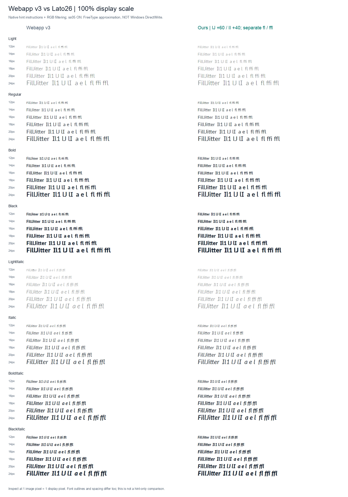

Unchanged Smeartype WASM renderer, FreeType v40, ss05 HarfBuzz layout adapter. RGB filter [8,77,86,77,8]/256; gamma 1.8 (matched to the repository proof, not Smeartype's 2.2 default).
Not a Windows DirectWrite capture. View native PNGs without scaling. Hint-control images use 3x nearest-neighbor enlargement.
Repository renderer comparison
